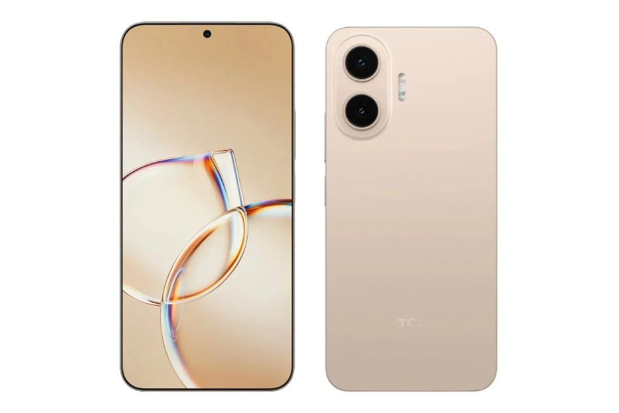

TCL P80 및 P80 Pro 출시 루머
TCL의 차기 스마트폰인 P80과 P80 Pro가 출시 전 루머를 통해 공개되었습니다. 이번 모델에서 가장 눈에 띄는 특징은 칩셋이나 카메라 성능이 아니라, 놀라울 정도로 얇은 화면 베젤입니다. 이 제품들은 훨씬 고가의 프리미엄 스마트폰에서도 볼 수 있을 법한 수준의 슬림한 베젤을 자랑합니다.
TCL P80 및 P80 Pro 상세 사양
먼저 P80 Pro 모델은 고성능과 세련된 디자인을 결합한 사양을 갖추고 있습니다.
- 디스플레이: 6.83인치 OLED NXTPAPER (2766 x 1280 해상도)
- 프로세서: MediaTek Dimensity 7400 Elite
- 메모리 및 저장공간: 8GB RAM, 256GB 저장공간
- 후면 카메라: 50MP 메인(OIS 지원), 8MP 초광각
- 전면 카메라: 32MP
- 배터리: 5,800mAh
일반 모델인 P80은 가격 경쟁력을 확보하기 위해 일부 사양을 조정했습니다.
- 프로세서: MediaTek Dimensity 7300 Elite
- 저장공간: 128GB
- 배터리: 5,000mAh
그 외 디스플레이, 카메라 구성, RAM 등 핵심 기능은 Pro 모델과 동일하게 유지되어, 보급형 모델임에도 불구하고 품질 저하를 최소화한 영리한 구성을 보여줍니다.
디자인 및 예상 가격
렌더링 이미지에 따르면 P80 Pro는 차분한 그레이-블루 색상에 독특한 알약 모양의 듀얼 카메라 모듈을 탑재했으며, 일반 P80은 따뜻한 느낌의 크림 톤으로 출시됩니다.
두 모델 모두 CES 2026에서 공개된 TCL NXTPAPER 70 Pro의 디자인을 계승하면서도, 해당 모델의 매트한 마감 대신 더 광택이 나는 외관과 훨씬 얇아진 베즐을 채택했습니다.
예상 가격은 P80이 약 €300, P80 Pro가 약 €350로 책정될 전망입니다.
총평
TCL의 차기작인 P80 시리즈는 매우 얇은 베젤을 통해 프리미엄급 디자인을 구현하면서도 합리적인 가격대를 공략할 것으로 보입니다. Pro와 일반 모델 간에 프로세서와 배터리 용량 등 실질적인 성능 차이를 두면서도 핵심 사양은 공유하여 소비자들에게 매력적인 선택지를 제공할 것입니다.
TCL P80 及 P80 Pro 发布传闻
关于 TCL 的下一代智能手机 P80 和 P80 Pro 的传闻现已公开。这些型号最显著的特征并非芯片或相机性能，而是令人惊叹的超窄屏幕边框。这些产品拥有甚至可以在高价位高端智能手机上看到的极细致的边框设计。
TCL P80 及 P80 Pro 详细规格
首先，P80 Pro 型号结合了高性能与精致的设计：
- 显示屏：6.83英寸 OLED NXTPAPER（分辨率 2766 x 1280）
- 处理器：MediaTek Dimensity 7400 Elite
- 内存与存储空间：8GB RAM，256GB 存储空间
- 后置摄像头：50MP 主摄（支持 OIS），8MP 超广角
- 前置摄像头：32MP
- 电池：5,800mAh
标准版 P80 为了确保价格竞争力，对部分规格进行了调整：
- 处理器：MediaTek Dimensity 7300 Elite
- 存储空间：128GB
- 电池：5,000mAh
除此之外，显示屏、摄像头配置和 RAM 等核心功能与 Pro 型号保持一致。这种设计在保证产品质量的同时，最大限度地降低了入门级型号的成本。
设计与预计价格
根据渲染图显示，P80 Pro 采用沉稳的灰色-蓝色调，并配备独特的胶囊形状双摄像头模块；而标准版 P80 则采用温暖的奶油色调。
两款型号都继承了在 CES 2026 上发布的 TCL NXTPAPER 70 Pro 的设计，但采用了更具光泽的外观而非该型号的哑光处理，并配备了显著变薄的边框。
预计价格方面，P80 约为 €300，P80 Pro 约为 €350。
总结
TCL 的下一代 P80 系列通过极窄边框实现了高端设计，同时瞄准了高性价比市场。该系列通过在处理器和电池容量上区分 Pro 与标准版，同时共享核心硬件规格，为消费者提供了极具吸引力的选择。
TCL P80およびP80 Proの発売に関する噂
TCLの次世代スマートフォン「P80」および「P80 Pro」に関するリーク情報が公開されました。今回のモデルで最も注目すべき点は、チップセットやカメラ性能よりも、驚くほど薄いディスプレイベゼルです。これらの製品は、より高価なプレミアムスマートフォンに匹敵するレベルのスリムなベゼルを誇ります。
TCL P80およびP80 Proの詳細スペック
まず、P80 Proモデルは高性能と洗練されたデザインを兼ね備えた仕様となっています。
- ディスプレイ：6.83インチ OLED NXTPAPER（2766 x 1280 解像度）
- プロセッサ：MediaTek Dimensity 7400 Elite
- メモリおよびストレージ：8GB RAM、256GB ストレージ
- 背面カメラ：50MP メイン（OIS対応）、8MP 超広角
- 前面カメラ：32MP
- バッテリー：5,800mAh
標準モデルのP80は、価格競争力を確保するために一部の仕様が調整されています。
- プロセッサ：MediaTek Dimensity 7300 Elite
- ストレージ：128GB
- バッテリー：5,000mAh
その他のディスプレイ、カメラ構成、RAMなどの主要な機能はProモデルと共通しており、エントリーモデルでありながら品質の低下を最小限に抑えた巧みな構成となっています。
デザインおよび予想価格
レンダリング画像によると、P80 Proは落ち着いたグレーブルーのカラーを採用し、特徴的なカプセル型のデュアルカメラモジュールを搭載しています。一方、標準モデルのP80は温かみのあるクリーム系カラーで展開される予定です。
両モデルとも、CES 2026で発表されたTCL NXTPAPER 70 Proのデザインを継承しつつ、あちらのマットな仕上げの代わりに、より光沢のある外観と大幅に薄くなったベゼルを採用しています。
予想価格は、P80が約€300、P80 Proが約€350になると見込まれています。
まとめ
TCLの次世代P80シリーズは、極薄のベゼルによってプレミアムなデザインを実現しながら、手頃な価格帯を狙う戦略をとっています。Proと標準モデルの間でプロセッサやバッテリー容量などの実用的な差を設けつつ、主要スペックを共有することで、幅広いユーザーに魅力的な選択肢を提供することを目指しています。
TCL P80 and P80 Pro Launch Rumors
Rumors regarding TCL's upcoming smartphones, the P80 and P80 Pro, have surfaced. The most striking feature of these models is not the chipset or camera performance, but rather their remarkably thin bezels. These devices boast slim bezels comparable to those found on much more expensive premium smartphones.
TCL P80 and P80 Pro Detailed Specifications
The P80 Pro model combines high performance with a sophisticated design.
- Display: 6.83-inch OLED NXTPAPER (2766 x 1280 resolution)
- Processor: MediaTek Dimensity 7400 Elite
- Memory and Storage: 8GB RAM, 256GB storage
- Rear Camera: 50MP main (OIS supported), 8MP ultra-wide
- Front Camera: 32MP
- Battery: 5,800mAh
The standard P80 model has adjusted certain specifications to ensure price competitiveness.
- Processor: MediaTek Dimensity 7300 Elite
- Storage: 128GB
- Battery: 5,000mAh
Other core features, including the display, camera configuration, and RAM, remain identical to the Pro model. This represents a strategic configuration that minimizes quality degradation while offering a more affordable option.
Design and Estimated Pricing
According to rendering images, the P80 Pro features a muted gray-blue color with a unique pill-shaped dual camera module, while the standard P80 will be released in a warm cream tone.
Both models inherit the design of the TCL NXTPAPER 70 Pro unveiled at CES 2026, but they replace that model's matte finish with a glossier exterior and significantly thinner bezels.
The estimated prices are expected to be approximately €300 for the P80 and €350 for the P80 Pro.
Summary
The upcoming TCL P80 series aims to deliver a premium aesthetic through ultra-thin bezels while targeting an affordable price point. By sharing core specifications like display and camera between the Pro and standard models, TCL provides a compelling range of options for consumers seeking high-quality design at various price levels.
